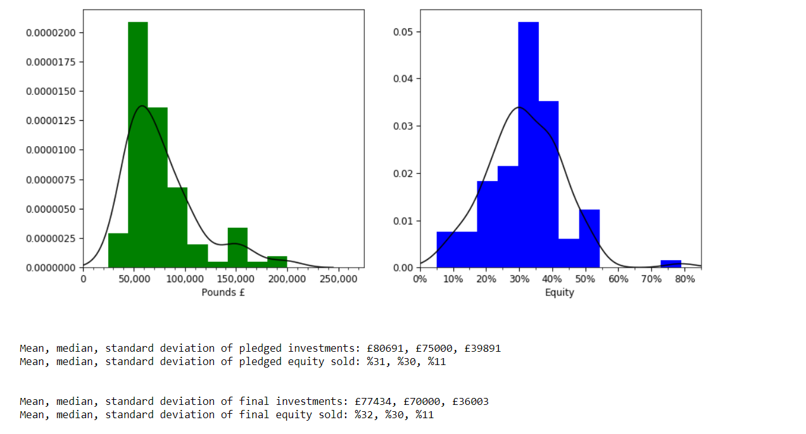
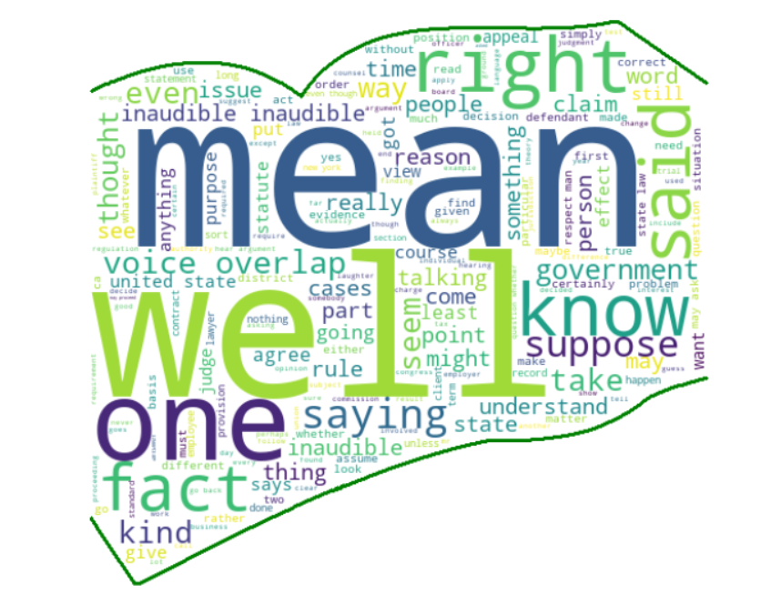
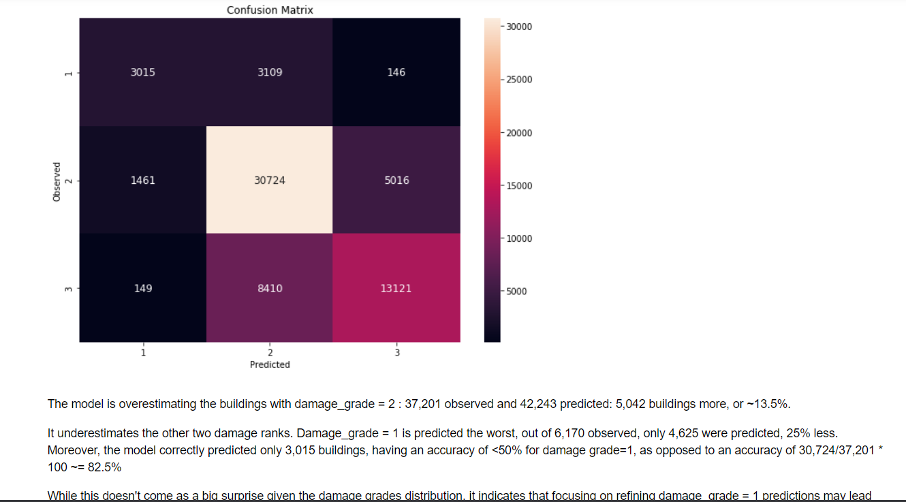
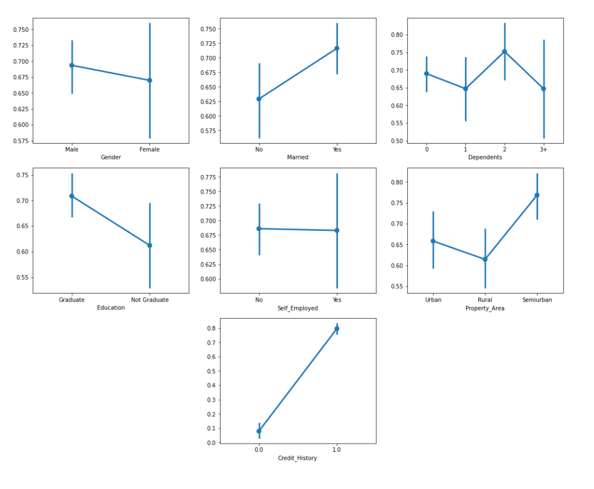
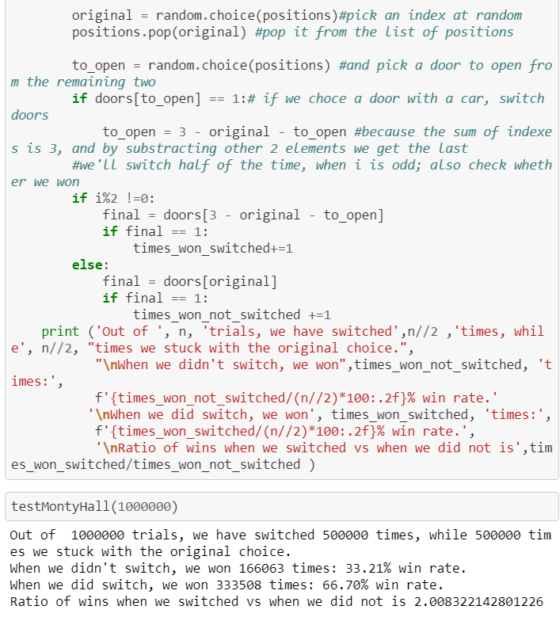

Dragon's Den is a British TV show first broadcasted in 2005. It allows entreprenaurs to present their business ideas to a panel of investors and pitch for an investment.
In February 2015 a report on Dragon's Den investments was published by The Sunday Telegraph.
In this analysis, I expand on that report by including data for the latest series, adding visualizations and approaching the data from some different angles.


Ever wondered about any of the folowings:
- What are the most frequently used words in court?
- Are there any significant differences in word usage by party affiliation?
- Who are/were the most vocal justices?

The Nepal April 2015 earthquake was devastating, causing plenty of casualties and destruction.
Click below to see a top 5% prediction model of building damage grade.

Binary classification of whether someone was awarded a loan or not.

A test of the monty hall hypothesis, along with a text version of the game.
{kind=link}
{kind=link}
{kind=link}
{kind=link}
{kind=link}